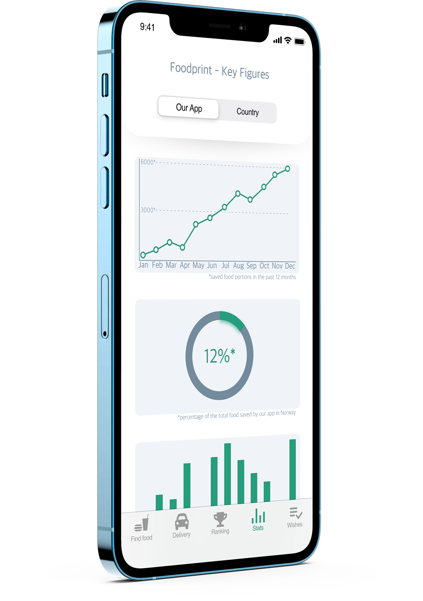

1) Download app
Download the app to start saving food today
2) Donate or Request Food
Find opportunities to donate meals or receive a meal
3) Choose delivery options
Input address, time, and date of food delivery
4) Enjoy sustainable eating
Receive your order or donate it for a sustainable tasty impact
-
Find Food
Register as either a business or an individual. After signing up with your phone and verifying your phone number, you are taken to the app homepage.
From here you have two options; Donate or Receive. Choose from a range of daily offers, or use the search bar for your own preference.

-

-

-
Delivery
The next page brings you to the delivery options of the app. Either pick up your food items directly from our partners, or have one of our friendly transporters deliver it directly to you.
Our transporters get free food themselves, the satisfaction of helping others and more rewards for the top rankers of the month.

-
Ranking
This page lists our most generous partners of the month and also the quarter. You can see a ranking of the best food transporters and also the most generous organizations.
The top transporter of the month receives a 1000,- NOK giftcard. The organization that donates the most each quarter gets a round trip aboard Colorline’s cruise ship to Copenhagen for all employees.

-

-

-
Statistics
Keeping track of statistics makes it easier to reach to the sustainable development goals set by the United Nations.
On this page you can see the numbers on the amount of food portions saved by our APP and other related stats. The page also contains relevant numbers sorted by country.

-
Wishes
This page of the app lets you register a food request. You can specify if you have allergies, are vegan, eat halal or kosher. Our partners receive the request and you get notified if the request is met.
Delivering the right product in the right quantity to the right consumer reduces the chance of excess food being thrown out.

-

Multiplatform available

The Fraction App is available on several devices. Download for iOS or Android to start saving food today! Use it on your smartphone, tablet or even Apple Watch. We make it easy to approach the food waste problem!
Contact Us
Address:
2625 W. Baseline Road
Tempe, AZ 85283-1056